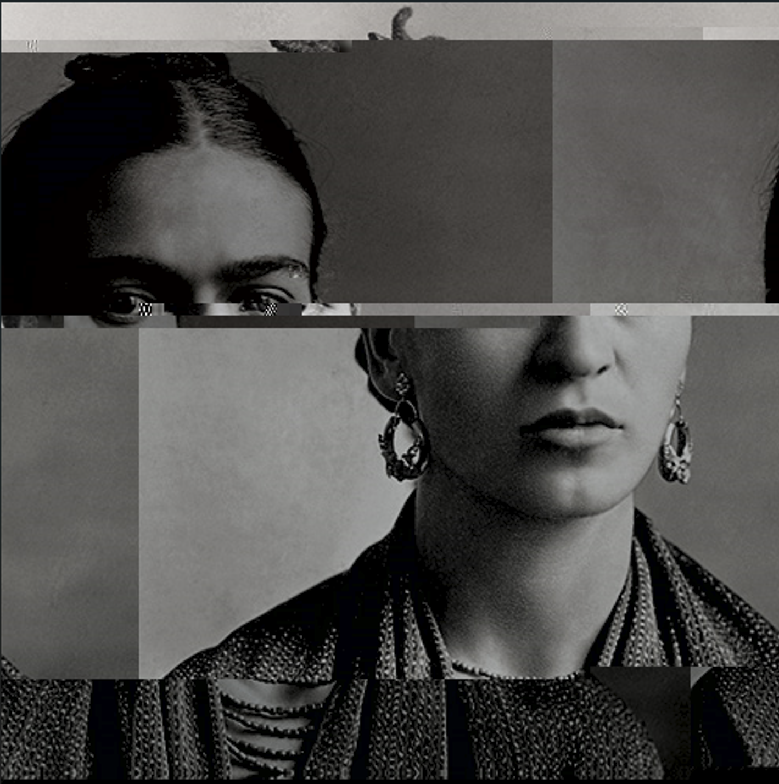
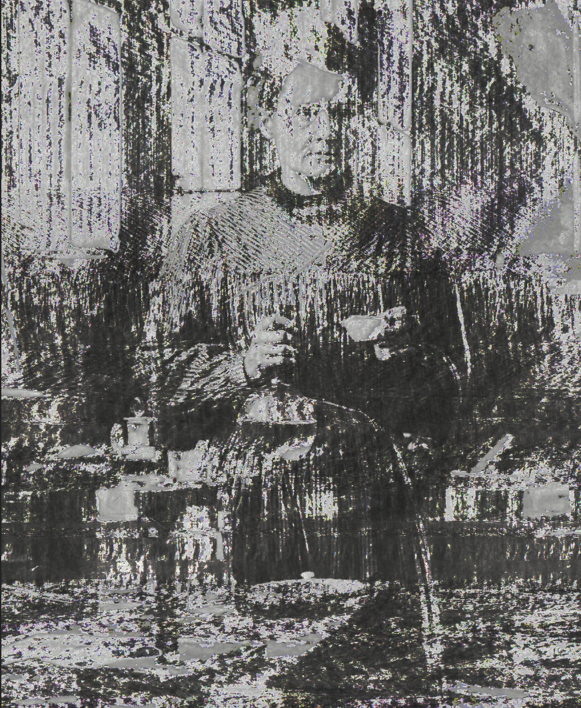
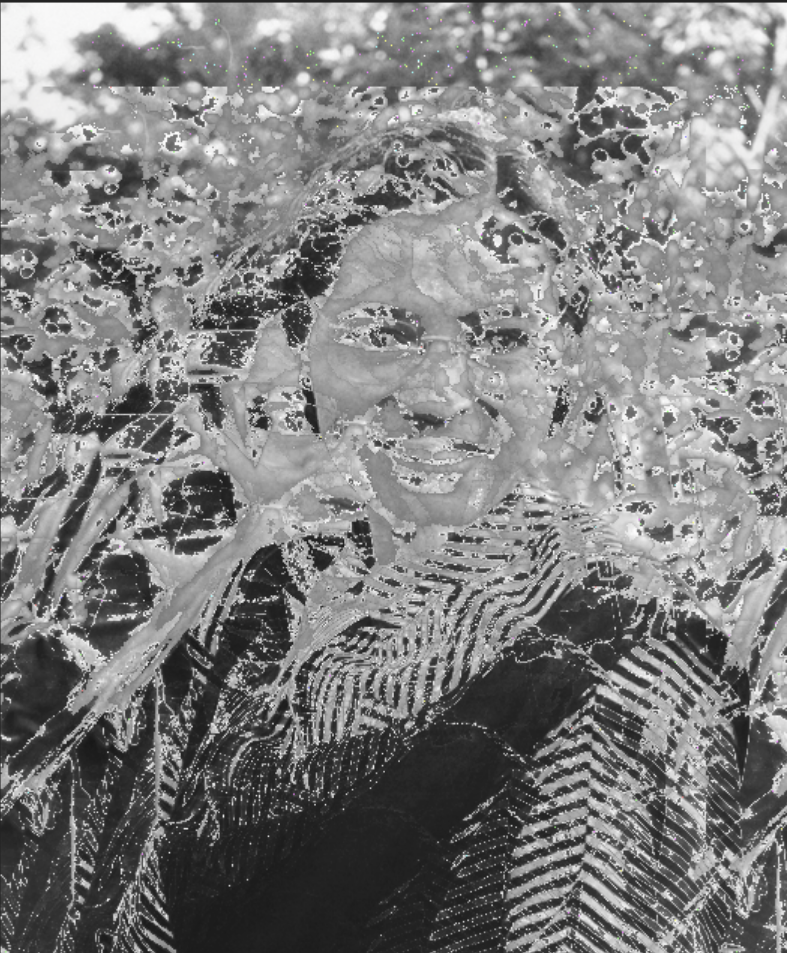

For the Glitch Art project, I used Notepad ++ to glitch photos of my choice. I chose Frida Kahlo, Marie Curie, and Rosa Parks as my subjects. I wanted to choose well known women and glitch them with different styles. Kahlo's photo has rectangular shifts and looks fractured. Curie's photo looks like it was corrupted by her radiation and is heavily distorted. Parks' photo is heavily disrupted and has blotch-like distortions. While all the images are distorted, I wanted their faces to still be somewhat recognizable and distinct.